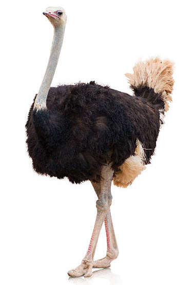
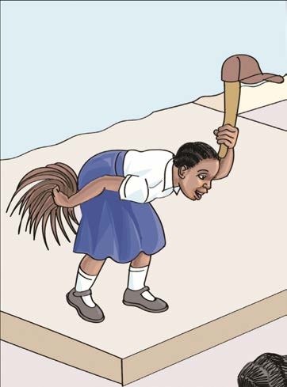
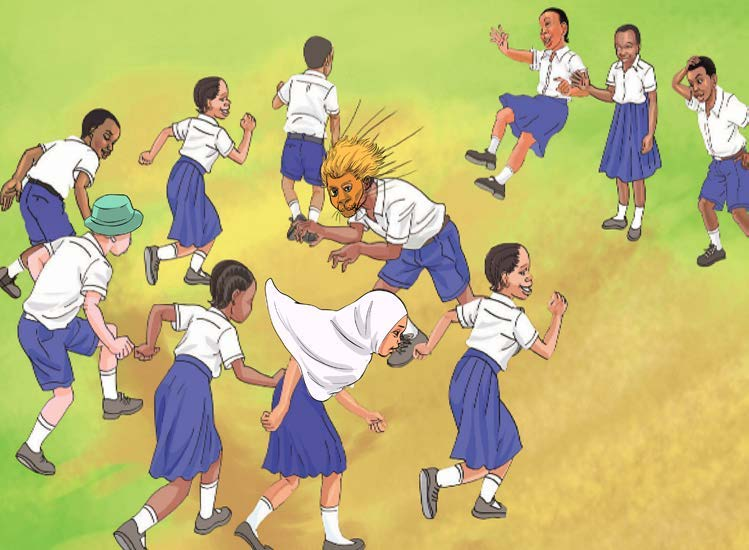

Kuigiza
Kuigiza ni sanaa inayohusisha kuvaa uhusika kwa kuiga watu, ndege au wanyama. Inahusisha sauti na mijongeo ya mwili ili kufikisha ujumbe kwa watazamaji.
Chunguza picha, kisha jibu maswali yanayofuata:



Maswali
Shughuli ya kumi na moja
Fanya mazoezi ya kuigiza kama mwanafunzi aliyeko katika picha namba 1. Tengeneza kinyago cha sura ya mnyama au ndege, kisha kitumie kuigiza tabia zake.